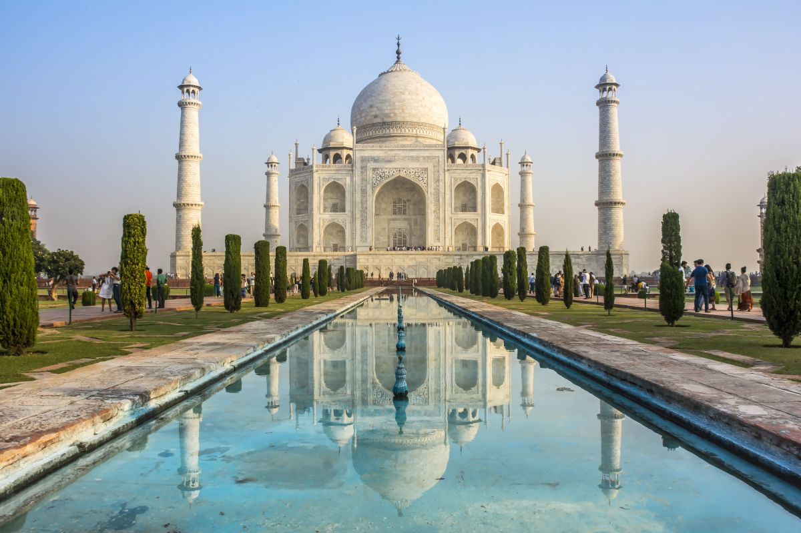

| Image |
Description |
 |
Stonehenge is a prehistoric monument on Plain in England, two miles
west of Amesbury.It consists of an outer ring of vertical Sarsen
standing stones, each around 13 feet high, seven feet wide, and
weighing around 25 tons, topped by connecting horizontal lintel
stones.
|
|
The Colosseum is an oval amphitheatre in the centre of the city of
Rome, Italy, just east of the Roman Forum. It is the largest ancient
amphitheatre ever built, and is still the largest standing
amphitheatre in the world today, despite its age.
|
 |
The Great Pyramid of Giza is the oldest and largest of the pyramids in
the Giza pyramid complex bordering present-day Giza in Greater Cairo,
Egypt. It is the oldest of the Seven Wonders of the Ancient World, and
the only one to remain largely intact.
|
|  |
An immense mausoleum of white marble, built in Agra between 1631 and
1648 by order of the Mughal emperor Shah Jahan in memory of his
favourite wife, the Taj Mahal is the jewel of Muslim art in India and
one of the universally admired masterpieces of the world's heritage
|